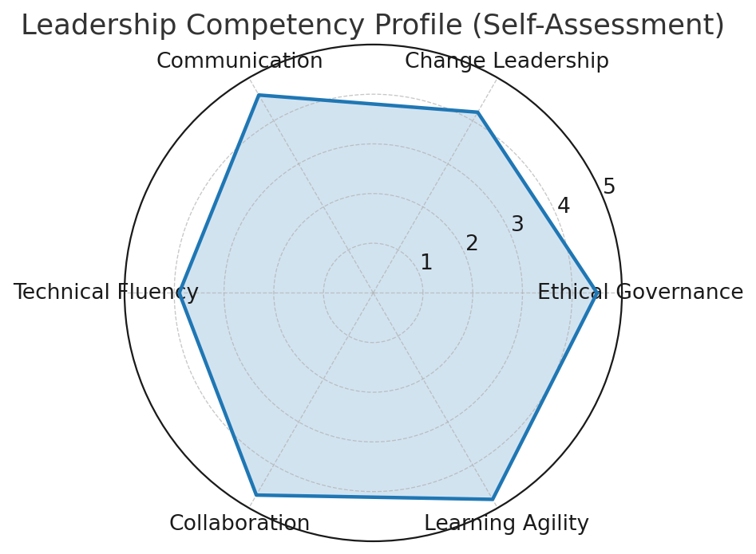
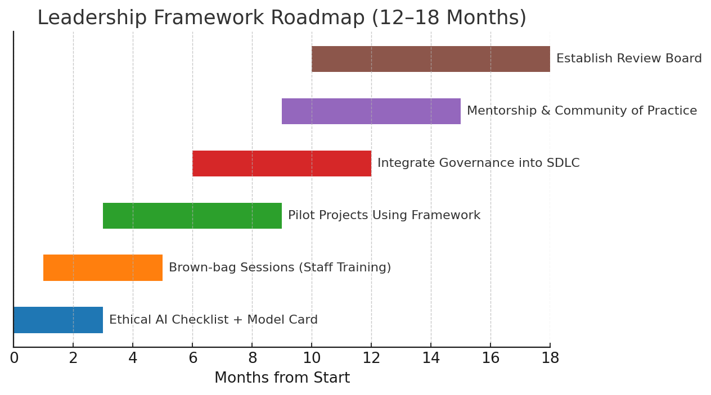
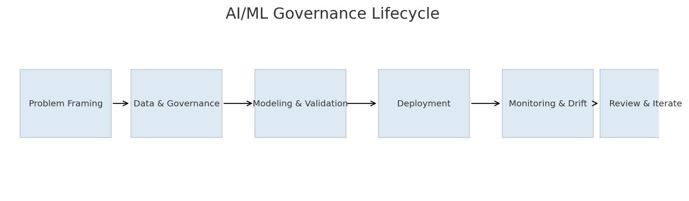
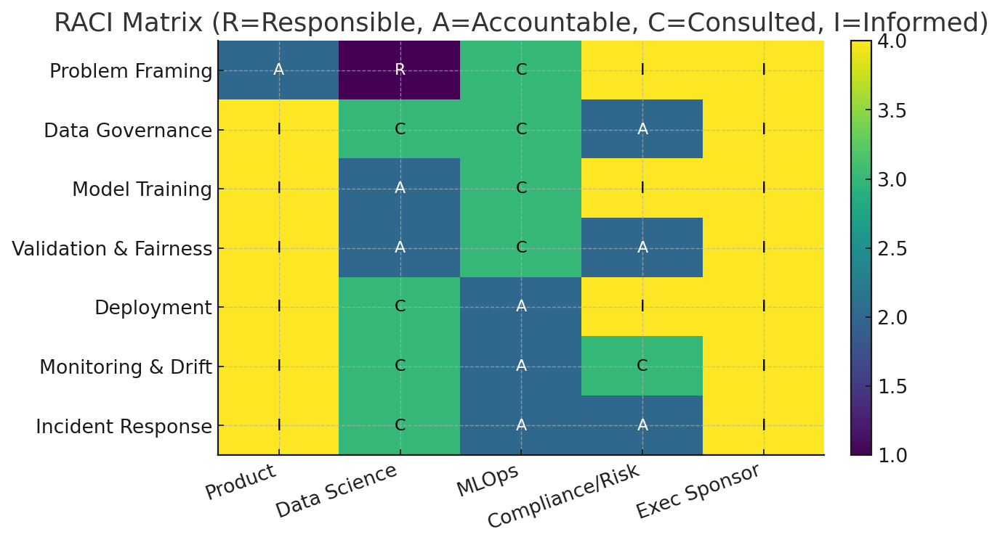

A framework that integrates mission, values, SMART objectives, and governance processes to
lead AI/ML initiatives responsibly and effectively.
Executive Summary
This artifact demonstrates my ability to lead AI/ML work with clarity, ethics, and measurable results.
It emphasizes transparency, fairness, stakeholder alignment, and continuous improvement.
The framework provides actionable guidance for executives, technical teams, and compliance stakeholders.
Visuals

Figure 1. Self-assessment across six leadership competencies.

Figure 2. Short-, mid-, and long-term actions (12–18 months).

Figure 3. Governance stages from framing → deployment → monitoring → iteration.

Figure 4. Roles and responsibilities across key activities (R/A/C/I).
Key Details
Objectives
Adopt ethical AI checklist and model card templates across projects (≥80%).
Improve stakeholder comprehension via executive briefs (+30% by survey).
Establish feedback loops for monitoring and drift detection.
Action Plans
Short-term: finalize templates, run brown-bag sessions, enable dashboards.
Mid-term: run cross-functional pilots, integrate approvals into SDLC.